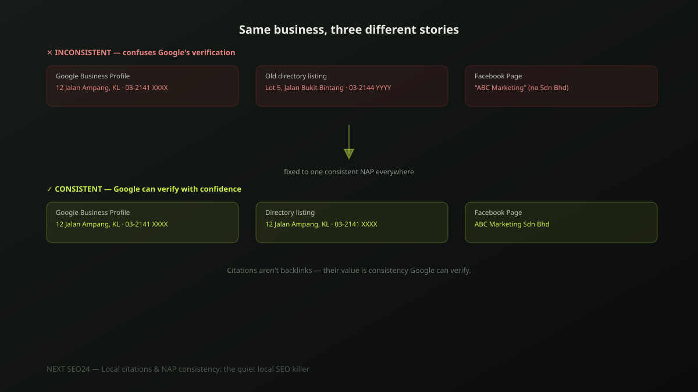

Local citations and NAP consistency: the quiet local SEO killer
A business moves office, updates its Google Business Profile, and forgets that fourteen other directories still list the old address. Nobody notices until local rankings quietly stall — and almost nobody thinks to check citation consistency as the reason. Here's what NAP actually means, why it matters more than it looks, and how to actually fix it.
What a "citation" actually is
A citation is any online mention of your business's Name, Address and Phone number — "NAP" — whether or not it links back to your website. Your Google Business Profile is a citation. Your Facebook Page is a citation. A listing on a local directory, an industry association member list, or a chamber of commerce site are all citations. Most of them aren't backlinks in the SEO sense at all — their value comes from something different: consistency.
Why inconsistency quietly hurts rankings
Google cross-references citations across the web to verify that a business is real, legitimate and actually located where it claims. When your address reads one way on your website, another way on Facebook, and a third way on an old directory listing, that's not a minor cosmetic issue — it's conflicting evidence about a basic fact Google is trying to confirm. Enough conflicting signals erode confidence in your location data generally, which shows up as unstable or suppressed Local Pack rankings with no single obvious cause.
The most common ways NAP quietly breaks
- An office move. The website and Google Business Profile get updated; a dozen older directory listings from years ago never do.
- A phone number change. Especially common after switching telecom providers or adding a dedicated business line — old listings keep the original number.
- Inconsistent business name formatting. "ABC Sdn Bhd" on one listing, "ABC" on another, "ABC Marketing Sdn. Bhd." on a third — each reads as a slightly different entity to an automated cross-reference check.
- Duplicate Google Business Profile listings. Created by a previous agency, an old employee, or a well-meaning rebrand, without checking whether a profile already existed for that location.
Where to actually check and fix citations
Start with the sources that carry the most weight: your Google Business Profile, Facebook Page, and any major data aggregators relevant to your region. In Malaysia and the broader Southeast Asian market, that typically includes general directories, industry-specific listing sites, and Facebook, which functions as a de facto business directory for many local searchers. Search your exact business name plus your old address to surface stale listings you may not remember creating.
The special case: duplicate Google Business Profiles
This is the single most damaging NAP problem we find, and one of the most common. Two profiles for the same physical location split reviews between them, split the ranking signals Google would otherwise consolidate onto one listing, and can actively suppress both from the Local Pack rather than helping either compete. If you suspect a duplicate exists — search your business name in Google Maps and look for a second result — request merging or removal through Google Business Profile support rather than simply abandoning one; an abandoned-but-still-live duplicate keeps causing the same problem. For the full method on managing your profile well once it's consolidated, see our Local SEO and Google Maps ranking guide.
A practical audit checklist
- Business name, address and phone number written identically — same abbreviations, same formatting — everywhere they appear
- Search your exact business name plus any former address to surface stale directory listings
- Search Google Maps for your business name to check for a duplicate Google Business Profile
- Update or remove listings on directories you no longer use, rather than leaving them live with outdated information
- Re-check every 6-12 months, or immediately after any office move, rebrand or phone number change
If you're not sure how many stale or conflicting citations exist for your business, send us your details — this is a quick, concrete check to run.
Frequently asked questions
Does every citation need to link back to my website to help SEO?
No. Most citations — directory listings, Facebook Page details, Google Business Profile — are not backlinks at all; many directories don't even link, or use a no-follow link. Their value isn't link equity, it's consistency: the more places list the exact same business name, address and phone number, the more confidently Google can verify the business is real and legitimately located where it claims.
How long does it take to see results after fixing NAP inconsistencies?
Typically 4-8 weeks for the correction to be recrawled and reflected in local rankings, though it varies by how many citations needed fixing and how authoritative they are. This isn't usually a dramatic overnight jump — it's more often a gradual firming-up of local pack rankings as Google's confidence in the business's location data increases.
What's the single most damaging NAP inconsistency we see?
Duplicate Google Business Profile listings for the same location — often created after an office move, a rebrand, or a previous agency setting up a second profile without checking for an existing one. Two competing profiles split reviews, split ranking signals, and can actively suppress both in the Local Pack rather than helping either.
Not sure your business listings are consistent everywhere?
Send us your business name and address — we'll check for stale listings, duplicate profiles and inconsistent NAP details across the directories that actually matter.
Chat on WhatsApp →